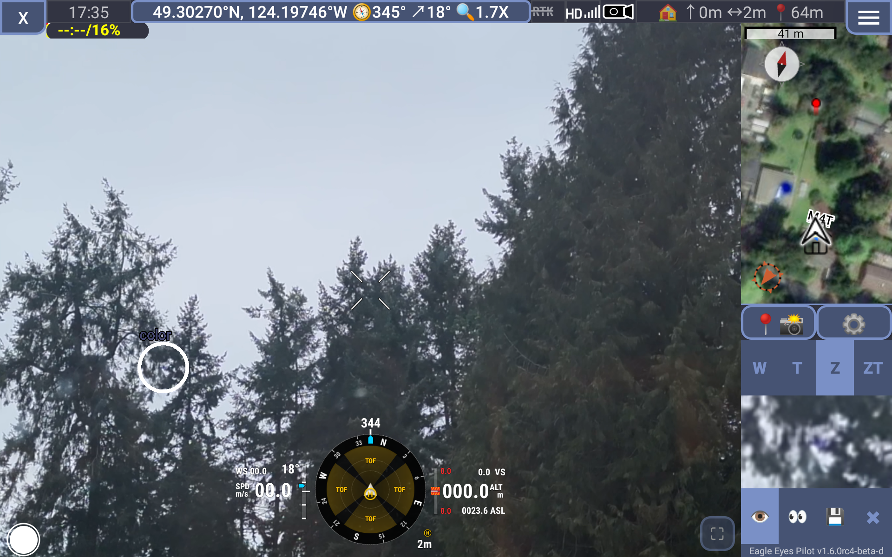
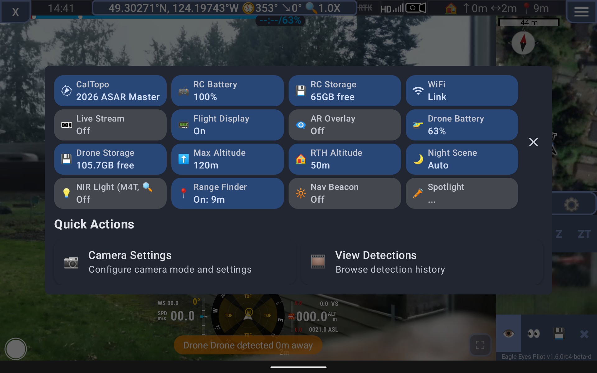

Core Interface
⏱️ 45 minutesLearning Objectives
- Understand the home page status dashboard and telemetry broadcast options
- Navigate the Fly Screen and identify every element on screen
- Read and interpret the Primary Flight Display (PFD) telemetry overlay
- Understand the top status bar indicators for battery, GPS, and connection
- Use the Quick Status & Actions dialog to monitor and control your system
2.0 Home Page (Landing Page)
The home page is your pre-flight status dashboard. It shows the health of all critical systems before you enter fly mode.

Warning Banner
A unified warning banner appears at the top of the home page when there are system issues:
| Color | Severity | Example |
|---|---|---|
| 🔴 Red | CRITICAL | GPS lost, low battery |
| 🟠 Orange | CAUTION | Weak signal, storage low |
| 🟡 Amber | NOTICE | Update available |
Status Card Grid (12 Cards)
The main area displays a 4-column grid of status cards:
| Card | Shows |
|---|---|
| Version | App version, SDK registration |
| DJI SDK | SDK 5 or SDK 4, supported drones |
| License | License status, expiration countdown |
| CalTopo | Map connection status |
| WiFi | Network connection |
| Drone | Model, battery %, connection |
| Log Reading | DJI flight log monitoring |
| Telemetry Broadcast | Local/Map/Public broadcast status |
| Live Stream | Streaming status, viewer count |
| Controller | Tablet battery and storage |
| Device Health | System warnings summary |
| Procedures | SAR procedures status |
Card Status Colors
- 🟢 Green = ACTIVE (healthy, working)
- 🟠 Orange = WARNING (attention needed)
- 🔴 Red = ERROR (action required)
- ⬛ Gray = INACTIVE (not active/connected)
Telemetry Broadcast Options
Eagle Eyes supports three independent telemetry broadcast methods. Each serves a different purpose and audience. You can enable any combination simultaneously from Settings.
| Broadcast | Protocol | Rate | Purpose |
|---|---|---|---|
| Local | UDP on port 7742 | 10 Hz | Share position with nearby Eagle Eyes tablets on same WiFi |
| Map | MQTT over SSL | 1 Hz | Send drone position to your CalTopo map for command post visibility |
| Public (EDSB) | MQTT over SSL | 1 Hz | Share position globally for inter-agency airspace awareness |
Local Broadcast (UDP)
Local broadcast sends your drone's telemetry over the local WiFi network using UDP packets at 10 updates per second. Any other Eagle Eyes tablet connected to the same WiFi network will automatically receive and display your drone on their map. This is the primary way to enable multi-drone operations where multiple pilots can see each other's positions in real-time.
Local broadcast includes built-in deduplication so unchanged positions don't flood the network, but it forces a packet at least every 2 seconds so newly connected devices pick up your drone immediately.
Map Broadcast (MQTT to CalTopo)
Map broadcast sends your drone's position over the internet using MQTT (with SSL encryption) to a topic linked to your CalTopo map ID. This allows anyone viewing that specific CalTopo map — even from a remote command post — to see your live drone position. The data is published at 1 update per second and requires the MQTT Telemetry setting to be enabled with a valid CalTopo map ID configured.
The MQTT broker automatically reconnects every 5 seconds if the connection drops, and uses your Eagle Eyes license key for authentication. Map topic IDs are obfuscated using SHA-256 hashing so CalTopo map IDs aren't exposed on the broker.
Public Broadcast (EDSB)
EDSB (Eagle Eyes Drone Surveillance Broadcast) shares your drone's position on a global public MQTT topic. This is analogous to ADS-B for manned aircraft — any Eagle Eyes user or compatible receiver worldwide can see drones broadcasting on the public channel.
For privacy, EDSB automatically redacts your drone ID and removes your home location from public broadcasts. You can optionally choose to share your contact information via the "Show Contact Info Publicly" setting, but it's hidden by default.
Why Three Options?
Each broadcast method addresses a different communication need:
- Local works without internet and is instant (10 Hz). Ideal for field teams on the same network.
- Map bridges the gap between the field and remote command posts via CalTopo.
- Public enables global airspace awareness across agencies and organizations.
In a typical SAR deployment, you would enable Local + Map at minimum. Add Public when operating alongside other agencies who may also have drones in the area.
2.1 Fly Screen
The Fly Screen is your primary workspace during active flight operations. When you tap the Fly button from the home page, you enter this full-screen interface. Every element is designed for at-a-glance readability while your focus remains on the mission.
Screenshot: Full Fly Screen with numbered callouts for each area
Video Feed (Center)
The live camera feed from your drone dominates the center of the screen. This is the real-time view from whichever camera lens is currently active (Wide, Zoom, or Thermal). When AI detection is running, bounding boxes are drawn directly over the video around any objects the model identifies. Each detection box includes a confidence percentage and the object class label.
You can tap the video feed to place a target point, which the drone's gimbal will track. Double-tapping recenters the gimbal to its default position.
Top Status Bar
The status bar runs across the top of the Fly Screen and provides critical flight information at a glance:
| Indicator | What It Shows | Details |
|---|---|---|
| Connection Status | Link to drone | Green when connected, red when signal is lost. Includes signal strength bars. |
| Battery | Drone battery % | Color-coded: green (>40%), yellow (20-40%), red (<20%). Shows individual cell voltages on long-press. |
| GPS | Satellite count & fix quality | Displays satellite icon with count. Green (8+), yellow (5-7), red (<5 or no fix). |
| Flight Mode | Current DJI flight mode | Shows P-GPS, ATTI, Sport, Tripod, or mission-specific modes. |
| Detection Mode | AI detection status | OFF, NORMAL, HYPERSENSITIVE, or SILENT. Tap to cycle through modes. |
| Recording | Video/photo status | Red dot when recording video, shows elapsed time. |
Battery Status Thresholds
| Level | Color | Action |
|---|---|---|
| >40% | 🟢 Green | Normal operations |
| 20-40% | 🟡 Yellow | Plan return |
| <20% | 🔴 Red | Return immediately |
GPS Quality Indicators
| Satellites | Color | Quality |
|---|---|---|
| 10+ | 🟢 Green | Excellent |
| 8-9 | 🟢 Green | Good |
| 5-7 | 🟡 Yellow | Marginal — position accuracy reduced |
| <5 | 🔴 Red | Poor / No fix — do not rely on GPS position |
Map Panel (Right Side)
The map panel shows your drone's real-time position on a map with your current search area, waypoints, and any detections plotted. The map tracks your drone by default ("follow mode") and shows your flight path trail. Other drones on the same Local broadcast network appear as separate icons on this map.
The map supports multiple tile sources (satellite imagery, topographic, OpenStreetMap) and integrates with CalTopo layers when connected. Detection markers appear on the map at the GPS coordinates where they were detected, allowing you to review spatial patterns.
Map View Modes
You can switch between three map view modes depending on what you need to focus on:
| Mode | Description | When to Use |
|---|---|---|
| Sidebar | Map on right side, video on left | Normal operations. Balanced view of both camera and position. |
| Fullscreen Map | Map fills the entire screen | Planning routes, reviewing detection locations, briefing with ground teams. Camera feed is hidden. Swipe left to return. |
| Hidden | Video fills the entire screen | Maximum video area for detection review or manual observation. Map is hidden but still tracking in the background. |
Telemetry Overlay (Bottom of Video)
The telemetry overlay bar at the bottom of the video feed shows key flight data in text format. This is separate from the Primary Flight Display (section 2.2) and provides a simplified readout of:
- GPS Position — Latitude/longitude in your configured coordinate format (decimal degrees, DMS, UTM, MGRS, or USNG)
- Altitude — Both AHL (Above Home Level) and ASL (Above Sea Level)
- Speed — Horizontal ground speed in m/s
- Bearing — Compass heading of the drone (0-360°)
- Distance — Horizontal distance from the home point
Detection Overlay (On Video)
When AI detection is active, the detection system draws bounding boxes directly on the video feed around identified objects. Each box is color-coded by confidence level and labeled with the object class (e.g., "Person", "Vehicle"). Tapping a detection box opens its detail card with the full-resolution cropped image, GPS coordinates, and options to save or dismiss.
DJI Settings Panel
Eagle Eyes integrates the DJI settings interface as a slide-out panel on the right side. Access it through the popup menu or Quick Actions. This panel provides native DJI controls for camera exposure, gimbal settings, obstacle avoidance, return-to-home altitude, and maximum flight altitude. The Primary Flight Display is automatically hidden while the DJI settings panel is open.
2.2 Primary Flight Display (PFD)
The Primary Flight Display is an aviation-style instrument overlay on the Fly Screen that provides a heads-up view of critical flight parameters. It is styled after the HSI (Horizontal Situation Indicator) found in manned aircraft cockpits. You can toggle it on or off from the Quick Actions dialog or the popup menu.

What the PFD Shows
The PFD combines multiple flight parameters into a single visual instrument:
| Element | Location on PFD | What It Shows |
|---|---|---|
| Compass Rose | Center ring | Current heading with cardinal/intercardinal markers. Rotates as the drone yaws. |
| Bearing to Home | Arrow on compass | Direction back to the takeoff point relative to current heading. |
| Altitude (AHL) | Left side | Height above the takeoff point in meters or feet. |
| Altitude (ASL) | Left side | Height above mean sea level. |
| Ground Speed | Right side | Horizontal speed over ground. |
| Distance to Home | Bottom | Horizontal distance from the home point. |
Altitude: AHL vs ASL
Understanding the two altitude references is critical for safe SAR operations:
| Type | Full Name | Meaning |
|---|---|---|
| AHL | Above Home Level | Height above the takeoff point. Resets to zero every time the drone takes off. Useful for maintaining consistent search altitude relative to where you launched. |
| ASL | Above Sea Level | Height above mean sea level. Consistent regardless of takeoff location. Use this when coordinating with ground teams, manned aircraft, or comparing altitudes across different launch sites. |
2.3 Quick Status & Actions
The Quick Status & Actions dialog is your central control panel during flight. Tap the Quick Actions button in the bottom-right corner of the Fly Screen to open it. The dialog is split into two sections: Status Cards across the top and Action Buttons below.

👆 Tap on any card or button in the screenshot above to see a detailed explanation.
CalTopo
Shows whether Eagle Eyes is connected to a CalTopo map, and which map it's linked to (e.g., "2026 ASAR Master"). When connected, features and detections can be synced bidirectionally with CalTopo.
Tap: Opens the CalTopo connector to change maps or reconnect.
RC Battery
Shows the remote controller's battery percentage. This is the DJI controller, not the tablet. Keep it above 20% to avoid losing control link mid-flight.
RC Storage
Displays free storage space on the remote controller. This is relevant if the RC caches maps, logs, or firmware updates locally.
WiFi
Shows the current WiFi network and connection status. WiFi is needed for Local UDP telemetry broadcast, CalTopo sync, and livestreaming. If disconnected, only offline features work.
Tap: Opens WiFi settings to connect to a different network.
Live Stream
Shows whether the WebRTC livestream is active and how many viewers are watching. When streaming, anyone with the share link can see your live drone video feed in their browser.
Tap: Opens the streaming dialog to start, stop, or copy the viewer link.
Flight Display
Toggles the Primary Flight Display (PFD) on or off. The PFD is the aviation-style HSI instrument overlay on the video feed showing compass heading, altitude, speed, and distance to home.
Tap: Instantly toggles the PFD visibility.
AR Overlay
Controls the Augmented Reality overlay which projects map features, waypoints, and search boundaries directly onto the live video feed. Useful for visual orientation during flight.
Tap: Opens AR overlay settings to configure what's displayed.
Drone Battery
Shows the drone's current battery percentage. This is the most critical indicator during flight. The card turns yellow at 40% and red below 20%.
Tap: Shows individual cell voltages and detailed battery health information.
Drone Storage
Shows free space on the drone's SD card. If storage runs out during flight, video recording and photo capture will stop. Check this before every mission.
Max Altitude
Displays the current maximum altitude limit set on the drone (e.g., 120m). The drone will not fly higher than this value. Can be adjusted in DJI settings for missions requiring higher altitude.
Long-press: Opens DJI settings to change the max altitude.
RTH Altitude
Shows the Return-To-Home altitude (e.g., 50m). When RTH is triggered, the drone climbs to this altitude before flying back to the home point. Set this higher than any obstacles between the drone and home.
Long-press: Opens DJI settings to change the RTH altitude.
Night Scene
Controls the camera's night scene mode which enhances low-light video quality. Options are Auto (camera decides), Enable (always on), or Disable (always off). Auto is recommended for most operations.
Tap: Cycles through Auto → Enable → Disable.
NIR Light (M4T)
Controls the Near-Infrared fill light on compatible drones (e.g., Matrice 4T). This illuminates the scene with IR light invisible to the human eye but visible to the camera's night vision mode. Useful for covert nighttime operations.
Tap: Toggles the NIR light on/off.
Range Finder
Shows the laser rangefinder distance reading (e.g., "On: 9m"). The laser measures the distance from the drone to whatever the camera is pointed at. Extremely useful for estimating distances to subjects or terrain clearance.
Tap: Shows detailed range measurement information.
Spotlight
Controls the drone's spotlight accessory brightness. The spotlight provides visible illumination for nighttime search operations, illuminating the ground below the drone for the camera and ground teams.
Tap: Opens spotlight brightness settings.
Camera Settings
Opens the camera configuration panel. From here you can adjust exposure (auto/manual), white balance, photo/video recording mode, resolution and frame rate, and switch between the Wide, Zoom, and Thermal camera lenses. Changes take effect immediately on the live video feed.
View Detections
Opens the detection history browser. This shows all AI detections from the current flight session as a scrollable list with cropped images, GPS coordinates, timestamps, confidence scores, and detection class labels. You can filter by confidence level, sort by time or type, and export detections for reporting.
Status Cards
The top section displays a grid of status cards. Each card shows a system status at a glance. Tap a card for more information or to toggle its feature. Long-press to open its settings.
| Card | Shows | Tap Action |
|---|---|---|
| CalTopo | Map connection status, map ID | Opens CalTopo connector settings |
| Battery | Drone battery %, individual cell voltages | Shows detailed battery breakdown |
| Storage | SD card free space (GB) | Shows storage details |
| WiFi | Network name, connection status | Opens WiFi settings |
| Live Stream | Streaming on/off, viewer count | Opens streaming dialog to start/stop |
| Flight Display | PFD on/off | Toggles the Primary Flight Display |
| AR Overlay | Augmented Reality on/off | Opens AR overlay settings |
| Night Scene | Night mode (Auto/Enable/Disable) | Cycles through night scene modes |
| Laser Rangefinder | Distance reading from laser | Shows range measurement details |
| Nav Beacon | Navigation beacon on/off | Toggles the drone's navigation beacon light |
| Spotlight | Spotlight brightness level | Opens spotlight brightness settings |
| Mission | Active flight mission status | Shows mission progress details |
Card Status Colors
- 🟢 Green border = Healthy / Connected / On
- 🟡 Yellow border = Warning / Needs attention
- 🔴 Red border = Error / Disconnected / Critical
Action Buttons
Below the status cards, action buttons provide quick access to common operations:
| Action | Icon | What It Does |
|---|---|---|
| Camera Settings | 📷 | Opens the camera configuration panel where you can adjust exposure, white balance, photo/video mode, resolution, and switch between Wide/Zoom/Thermal lenses. |
| View Detections | 🎞️ | Opens the detection history browser. View all AI detections from the current session with cropped images, GPS coordinates, timestamps, and confidence scores. You can filter, sort, and export detections from here. |
Knowledge Check
Practice Exercise
- Open Eagle Eyes and review the home page status cards. Identify the Telemetry Broadcast card and note which broadcast methods are enabled.
- Enter the Fly Screen and identify all major areas: video feed, top status bar, map panel, telemetry overlay, and the Quick Actions button.
- Read the top status bar. What is your battery percentage? How many GPS satellites are connected? What flight mode is shown?
- Toggle the Primary Flight Display on (via Quick Actions or popup menu). Identify the compass rose, altitude readings, and distance-to-home on the instrument.
- Dismiss the PFD by swiping it left. Re-enable it from Quick Actions.
- Switch the map between Sidebar, Fullscreen, and Hidden modes. Note how the video feed resizes in each mode.
- Open the Quick Status & Actions dialog. Review each status card. Tap the CalTopo card and the Battery card to see their detail views.
- From Quick Actions, open Camera Settings and View Detections to familiarize yourself with those panels.